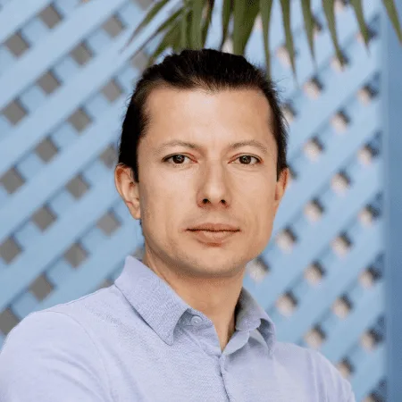

About
TED-Ed Student Talks helps students find an idea they care about, develop it and share it as a talk. Our group is hosted by The Falcon School in Nicosia, Cyprus. It is free for students and schools.

Artem Rodichev
Founder and Curator, TEDxEleftheriaSquare
Artem has organised more than 25 TEDx events in two countries. From 2014 to 2022 he ran TEDxSadovoeRing in Moscow: 23 events, 100 speakers and 5,000 guests in the room.
He is the founder and curator of TEDxEleftheriaSquare in Nicosia, and in October 2024 he led and co-hosted its event Symphony of Minds. Outside TEDx, he has spent more than 12 years in technology.

Ekaterina Solovyeva
Co-Head, TEDxEleftheriaSquare
Ekaterina has co-led TEDxEleftheriaSquare since 2023, bringing people from different fields and backgrounds together around ideas. In 2025 the team received a Community Engagement & Diversity Excellence Award for Cyprus from Acquisition International.
Ekaterina is a corporate communications and brand director based in Limassol, with almost eight years at dentsu and a background in strategic programmes, reputation and social impact.
TEDxEleftheriaSquare
Symphony of Minds took place in Nicosia on 12 October 2024 with ten speakers, among them Nobel laureate Sir Christopher Pissarides. Talks and photos are at tedxes.com.
Our relationship with TED
This is a local, non-profit programme that uses TED-Ed's free curriculum. It is not run by TED. TED, TED-Ed and TEDx are trademarks of TED Conferences, LLC.